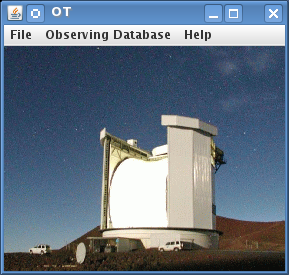

To begin you should initialise the JCMT OT. Remember that the software must already be downloaded and installed for these pages to be relevant (see our software installation page — make sure you have downloaded the latest version!)
You will see two windows pop up. One has a colour picture of the telescope - that is the JCMT root window. You can use its menus to open and save files and fetch programs from our database.  The window with the JCMT line drawing, which pops on top of the root window, provides a shortcut to some of the most common startup actions, so we call that the startup screen:
For now, press "Create New Program" on the startup screen. The startup window will be replaced by an science program window. If you are using a proxy server to connect to the internet now would be a good time to configure the OT to use this — see the instructions here.
("Open Existing Program" lets you open a science program that you've previously edited and saved in your own computer system. "Fetch Program" allows you to download a program that that you have completed and uploaded to our observing database. To download the program, of course, you will need the project ID (e.g. m06bc18) and password.
Look at your blank science program window. It's essentially divided in four sections:
The bar between the program panel and the editor panel can be dragged around to enlarge or reduce them.
Currently, the only thing in your program panel is a "Science Program" line. We'll add things to it later. For now, take the time to fill in its details in the Science Program editor on the right. The most important field here is the Project ID field. You have to get this right otherwise you will not be able to submit your program to us. Your project ID is what you were assigned when you submitted your proposal for telescope time. It is of the form m06b followed by a country letter and a two digit proposal number (sometimes followed by a letter).

Also on the panel are estimates of the total time the specified program will take with and without optional observations, which are currently both 0 since we haven't specified any observations yet.
Now that we've done something we can save it. Open the File menu in your Science Program window and choose "Save As...".

You will be prompted for a filename and so on:

The file format is XML, which is a text (not binary) format that you can read in later with the OT, or email to your collaborators. If you have a question, you can also email your file to your "Friend of the Project" along with your question.
You might have noticed that the title of your Science Program was italics and now that you've saved the file, the title is normal font. When you edit a component of your Science Program its title changes font to indicate that you need to save your work.
When you think you are happy with your MSB, your are strongly advised to validate the MSB before submitting it to the database. To do this, click on your science programme and press the "Validation" button on the bar above. This will tell you if there's anything seriously wrong with your MSBs — the output can be a bit cryptic though — so do ask us if you can't figure out what it means. You can also check individual MSBs and observations.
When you are happy about the MSBs you have created you can submit them to our database. As soon as you do this, they may be observed so don't do this unless you mean it! To submit your program to our database, pull down the Database menu on your Science Program window:

A little window will pop up using the Project ID that you put into your Science Program at the start (see Your science program). It will also ask you for a password. You can get a password from our password generator at http://omp.eao.hawaii.edu/cgi-bin/issuepwd.pl . If you forget it, go there to get another one. If you are PI on more than one project you'll need a password per project so that you can share it with your different sets of Co-Is. The password you get will also allow you access to your Feedback Area to check on the progress of your project, double-check your MSBs, retrieve your data and exchange views with our staff. Check it out. Both the above links can also be found off on OMP home page http://omp.eao.hawaii.edu
When you do get your password and submit your program, you will receive a summary of all the MSBs contained in your program. Check to make sure that everything is okay. If the are major problems with you science program the database may complain and refuse to accept the submission. If you don't understand what the problem is, email us along with a copy of the problematic project, but check the Frequently Asked Questions for hints first.
One last thing: don't forget to save your Science Program to your local file too. But — always start a new session by fetching the program from our database before making any changes, since our system modifies your science program to indicate which observations have been observed.
Note that throughout this document integration times are the "on"-source time only, instead of "on+off" as before.
There is a section on Advanced Topics that observers should read. There you will learn more about how the Target and Heterodyne components can interact with each other, and also how to use the AND/OR folders when you have many MSBs in your programme. Survey containers may significantly simplify your setup if used properly.
Please be sure to carefully double-check your program and to validate after high-lighting the top-most entry in the OT program. The quoted Observing times are approximate and estimates of overheads are based on limited tests. Check the validation messages and contact your Friend of the Project if you need help.
A detailed description of the various observing modes, rms noise, and durations is available as a document Heterodyne Obsmodes. Even though the information is not required in order to set up a science program, experienced as well as novice JCMT observers are encouraged to read the document as a general background.